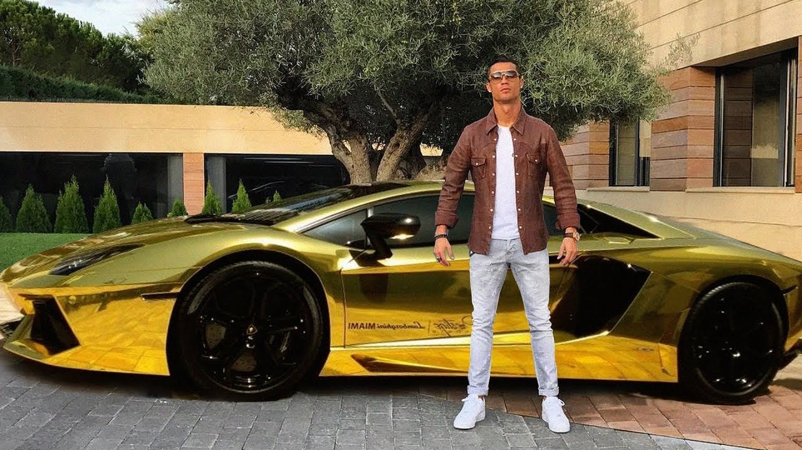

Ronaldo's collection of cars is quite elaborate too. A total of 19 cars worth over $ 4.9 million. The cheapest car he has is Mercedes-Benz C220 CDI. Considering he is a footballer, we expect he uses these cars to their potential. That is a lot of horse power in his garage, including a Bentley GT Speed worth $ 220,000.Ronaldo bought the Maserati GranCabrio in 2011 which cost him $ 140,000. There are nine other cars Ronaldo owns, namely BMW M6, Bentley Continental GTC, Mercedes-Benz C-Class Sports Coupé, Porsche Cayenne, Porsche 911 Carrera 2S Cabriolet, Porsche Cayenne Turbo, Audi Q7, and a Audi RS6.
